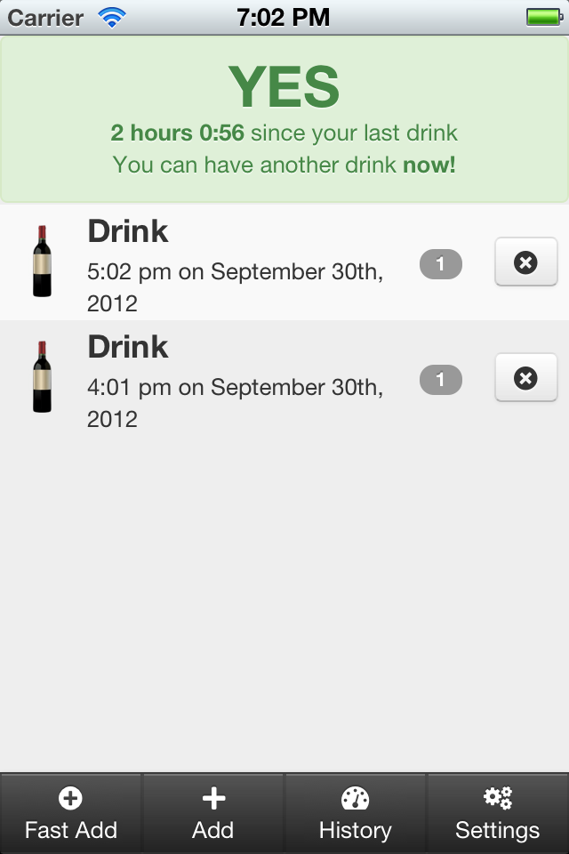
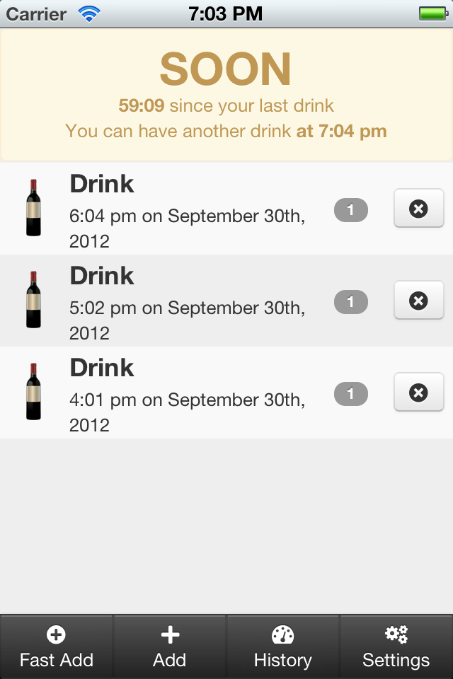
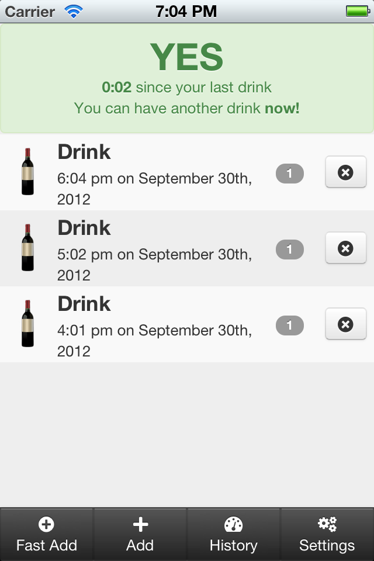
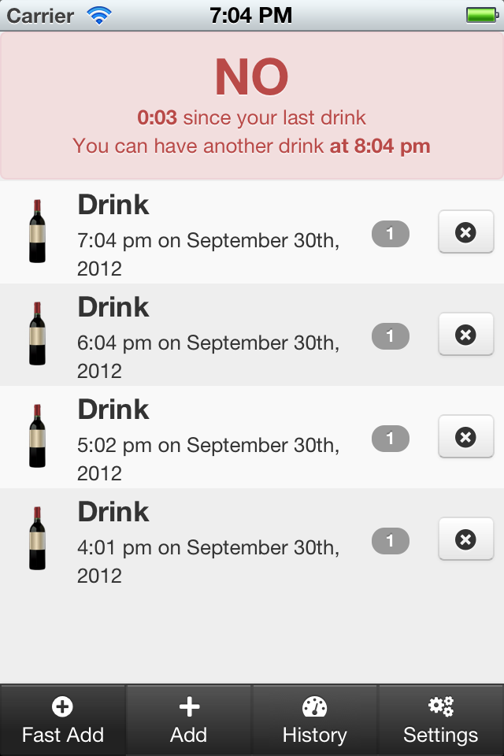
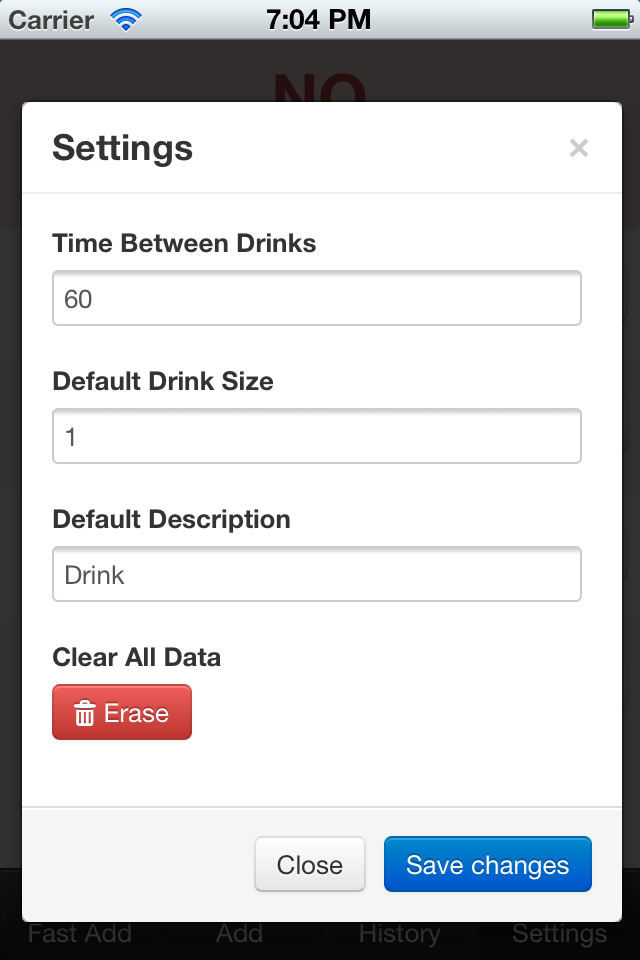

Keep tabs on how many drinks you've had and when you had your last drink!
GoodDrinker helps moderate your drinking habits by keeping track of your last drink, and recommending a minimum time between drinks.
Not only will GoodDrinker help you to pace your drinking, you can also see your history and consumption patters including how many drinks you've had in the last 24, 48, or 72 hours as well as all the drinks that you've ever recorded in GoodDrinker.
    
Please, be smart, never drink and drive.
Don't have a compatible mobile device? No problem! You can simply bookmark the web version with any modern mobile browser and get the same features and experience as the native versions.
With GoodDrinker for iOS you can take it with you where ever you go, and there's no need for a network connection. iOS 6.0 or later is required.
With GoodDrinker for Android you can take it with you where ever you go, and there's no need for a network connection.